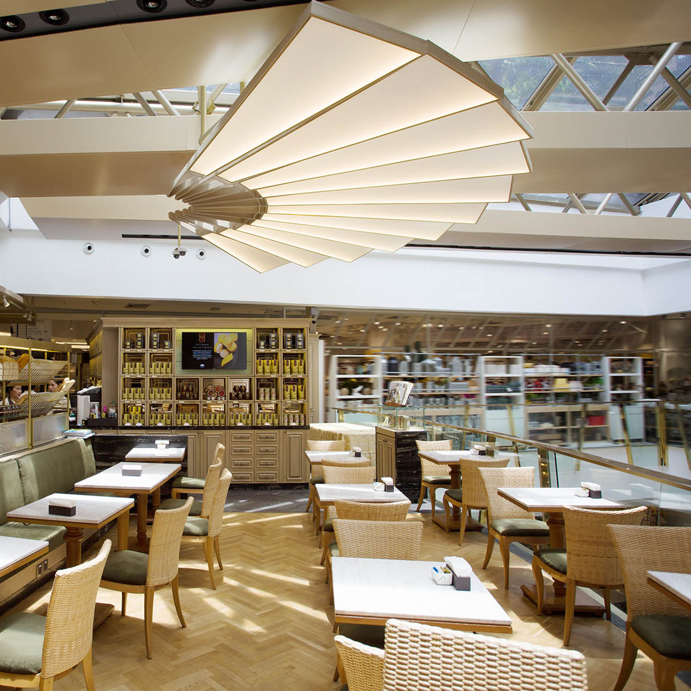
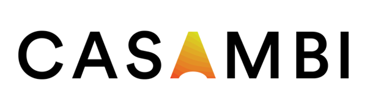

Stretch Ceiling Systems
STRETCH CEILING
Light without a source. The ceiling becomes the surface — seamless, luminous, architectural. Stretch ceiling systems let you disappear the fixture entirely, replacing it with even, diffused light across any span. The result reads as a design decision, not a lighting one.
Full design detail and material specifications available on request. We support the project from concept drawing through to installation coordination.

Compatible with CASAMBI wireless lighting control — dimmable drivers behind stretch ceiling panels support Bluetooth mesh commissioning. No additional wiring or ceiling penetrations.
Enquire
Stretch ceiling is specified per project. Contact us to discuss dimensions, light levels, and integration with your ceiling design — no standard pricing, every installation is quoted directly.